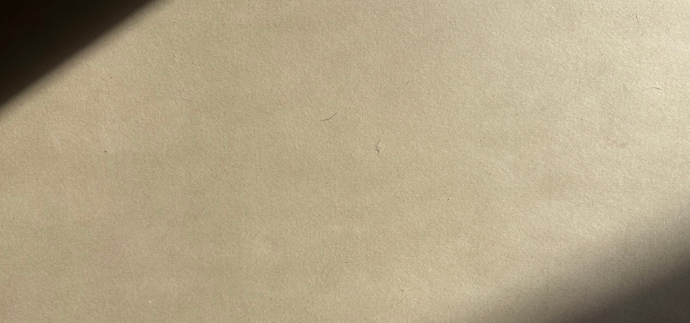
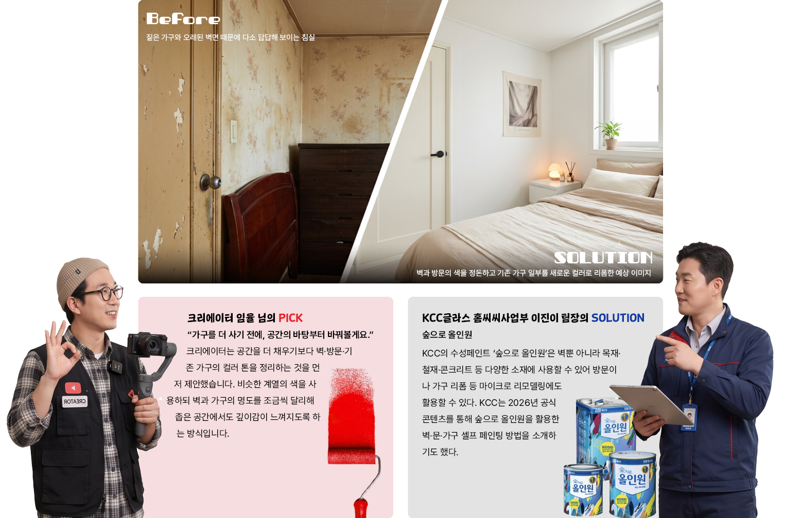
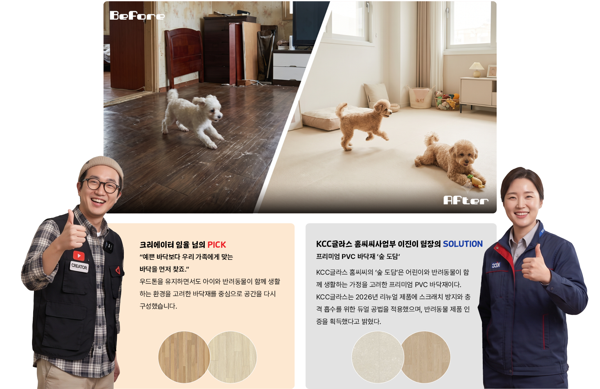
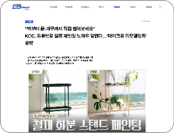

좁고 오래된 집, 어떻게 바꿀까?
크리에이터와 KCC가 제안한 맞춤 인테리어 솔루션
AI 요약 | ROOM SOS 한눈에 보기
집 전체를 공사하지 않아도 벽·방문·가구의 컬러와 바닥 소재를 바꾸면 공간의 분위기를 개선할 수 있습니다. 크리에이터 임율과 KCC글라스 홈씨씨사업부가 오래된 침실과 반려견이 함께 사는 거실에 맞춘 솔루션을 제안합니다. 본문의 AI 이미지는 실제 시공 결과가 아닌 제안 솔루션의 예상 이미지입니다.
“집 전체를 뜯어고치긴 부담스럽고, 지금보다 조금 더 나답게 살고 싶어요.” 웹진과 인테리어 크리에이터 채널을 통해 도착한 현실적인 공간 고민에 인테리어 크리에이터 임율 님의 감각과 KCC글라스 홈씨씨사업부 이진이 팀장의 제품·컬러·소재 노하우가 닿았다. KCC 임직원과 외부 고객, 두 공간의 고민을 진단하고 AI로 변화된 모습을 미리 구현해봤다.
※ AI 이미지는 실제 시공 결과가 아닌 제안 솔루션을 시각화한 예상 이미지입니다.
(KCC건설 공무팀 이정호 팀장 / 15년 된 아파트 침실)
침실의 가장 큰 고민은 오래된 방문과 가구, 누렇게 변한 벽. 큰 공사를 하기에는 비용과 시간이 부담스럽지만, 매일 가장 오래 머무는 공간인 만큼 분위기는 확실히 바꾸고 싶다고 한다.

※ AI 이미지는 실제 시공 결과가 아닌 제안 솔루션을 시각화한 예상 이미지입니다.
(외부 고객 심현모 님 / 반려견 2마리와 함께 사는 거실)
강아지가 뛰어다닐 때마다 미끄러지는 모습이 신경 쓰이고, 기존 바닥에는 생활 스크래치도 늘어났다는 두 번째 신청자. 이번에는 인테리어의 분위기보다 생활 방식 자체가 소재 선택의 출발점이 됐다.

Q. 부분 리모델링이란 무엇인가요?
집 전체를 철거하고 새롭게 시공하는 대신 거실·주방·침실·욕실 등 필요한 공간이나 항목만 선택해 개선하는 방식입니다. 홈씨씨는 2026년 현관·거실·주방·침실·욕실 5개 공간을 각각 선택할 수 있는 ‘홈씨씨 공간 패키지’를 출시했습니다. 부분 리모델링 수요에 대응하기 위해 공간별로 자재와 디자인을 큐레이션해 제공하는 상품입니다.
- 마이크로 리모델링
- 전체 철거 대신 벽면 페인팅, 방문·가구 리폼 등 비교적 작은 범위의 변화로 공간의 기능이나 분위기를 개선하는 방식을 말합니다. KCC 역시 셀프 페인팅 콘텐츠를 통해 적은 비용으로 공간 분위기를 바꾸려는 마이크로 리모델링 수요와의 접점을 확대하고 있습니다.
- PVC 바닥재
- PVC를 주요 소재로 사용하는 바닥 마감재. 제품에 따라 디자인과 두께, 충격 흡수, 표면 성능 등이 달라지므로 생활환경에 맞춰 선택해야 합니다.
- 공간 패키지
- 홈씨씨가 공간별로 필요한 자재와 디자인을 큐레이션해 제공하는 부분 리모델링 상품. 현재 현관·거실·주방·침실·욕실 등 5개 공간으로 구성돼 있습니다.
▶ 홈씨씨 공간 패키지
현관·거실·주방·침실·욕실 등 필요한 공간만 골라 진행하는 부분 리모델링 상품 알아보기.
▶ 홈씨씨 인테리어
공간별 디자인 패키지와 인테리어 상담·시공 프로세스 알아보기.
▶ 숲 도담
어린이와 반려동물이 함께 생활하는 공간을 고려한 프리미엄 PVC 바닥재 알아보기.

▶ 숲으로 올인원 셀프 페인팅
벽·문·가구 등 다양한 생활 공간을 직접 바꾸는 페인팅 방법 알아보기.
이 이야기의 키워드
이번 이야기는 어떠셨나요?
댓글 3
dsa***
과학이 항상 숨어있네요
dsa***
과학이 항상 숨어있네요
dsa***
과학이 항상 숨어있네요